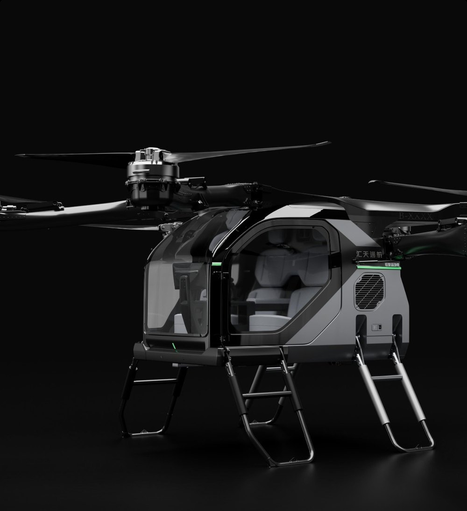

FINDING 01
安全是系统属性，不是某个部件
它同时取决于飞行器设计、软件、电池、分合机构、地面车辆、飞行员、营地、维修、空域与监管。只分析“电机失效”会漏掉一半风险。
系统安全工程
课程作业-2 / 系统安全工程 · 2026
小鹏汇天「陆地航母」X3-F 的全方位安全分析ARIDGE LAND AIRCRAFT CARRIER · SYSTEM SAFETY CASE
安全不是一句“航空级”，而是一组可被验证的目标、危害、屏障与证据。本报告用系统安全工程的方法，拆解 X3-F 从设计、取证、运行到持续适航的安全链条。

Executive Summary
这不是一份“证明 X3-F 不安全”的报告，也不是一份“替企业背书”的报告。它回答的是：在现有公开证据下，我们究竟能对它的安全性说什么、不能说什么。
X3-F 的安全设计意图是可信的，但公开证据不足以证明它已经安全；当前适合在严格限制下的受控示范、私人娱乐与飞行培训中积累证据，不适合作为商业载人运输的“已证明安全”产品。
它同时取决于飞行器设计、软件、电池、分合机构、地面车辆、飞行员、营地、维修、空域与监管。只分析“电机失效”会漏掉一半风险。
CAAC 专用条件规定了结构、电池、飞控、HIRF、应急着陆等要求；但公开材料没有 FHA/PSSA/SSA、失效概率预算、软件保证等级与机队数据，无法据此得出“已安全”的结论。
六旋翼、可控应急着陆、结构坠撞载荷、电池热安全条款、昼间目视/2 座/非商业载客都是屏障；但共因失效（软件、电池、传感器、维修）可以同时击穿多条屏障。
失控、电池热失控、空中相撞、障碍物/CFIT、分合误操作、人为因素与坠后火灾，才是需要优先管理的危害；单一部件失效只是其中一条路径。
120 m、昼间目视、20 分钟、2 座降低了暴露，但也意味着更少能量储备、更少备降选择、更高第三方风险。边界必须写进飞行手册，而不是只写在宣传页。
在 TC/AC、SMS、机队数据与独立安全评估到位前，不应把“能飞”当作“已安全”，更不应把它包装成商业载人运输。安全是规模化的前置条件，不是上市后的补丁。
本报告基于公开证据的主观评分，满分 10 分；不是适航结论，也不是企业评级。
综合判断：4.2 / 10 · 证据受限的有条件安全。设计意图高于证据质量，是当前最典型的“工程先行、安全论证滞后”。
Method & Evidence Boundary
本报告采用“系统安全工程 + 安全案例”的评估框架：先定义系统与运行，再识别危害、评估风险、检查屏障、追踪证据，最后判断结论能走多远；同时参考 NASA UAM 成熟度框架，把单机安全放回运行体系[20]。
飞行器、陆行体、分合、人员、营地、空域与维修边界。
FHA、STPA、FTA、FMEA、共因与运行场景。
预防、检测、恢复、逃生、救援五层防御。
试验、失效注入、软件保证、独立评估。
SMS、培训、报告、持续适航与安全文化。
| 安全工程活动 | 它回答的问题 | 本报告的公开证据 |
|---|---|---|
| FHA 功能危害评估 | 哪些功能失效会导致什么后果？ | 未公开 仅有专用条件的条款级要求 |
| PSSA / SSA 初步/系统安全评估 | 架构是否满足安全目标？证据是否闭合？ | 未公开 |
| STPA 系统理论过程分析 | 控制行为为什么可能不安全？ | 本报告重建 |
| FTA / FMEA | 失效如何组合成事故？哪些单点/共因最危险？ | 本报告示例 |
| SOTIF | 没有硬件故障时，功能边界与误用为何仍危险？ | 本报告分析 |
| SMS | 组织如何持续识别、报告、纠正风险？ | 未公开 |
| GSN 安全案例 | 我们凭什么相信“可接受安全”？ | 本报告框架 |
本报告只使用公开材料：CAAC 专用条件、企业官网、公开报道、标准与学术文献。没有企业内部 FHA/PSSA/SSA、飞行手册、试验报告、软件保证材料或机队数据。因此，它评估的是“公开证据是否足以支持安全结论”，不是替代适航审查。
System & Safety Boundary
X3-F 不是一个孤立的飞行器。安全边界至少包括：飞行体、陆行体、分合机构、充电系统、飞行员、营地、维修与空域。边界画错，危害就会漏掉。
在系统安全工程里，“系统”是你正在控制的那部分世界。对 X3-F 而言，这个世界包括一架可折叠的六旋翼飞行器、一台 6×6 增程母舰、一套自动分合与补能接口，以及一个尚未成熟的地面运行网络。
图 1 STPA 控制结构（本报告重构）。未公开的飞控拓扑、冗余架构与告警逻辑不在图中臆测；外部扰动与控制器同等重要。
| 安全关键功能 | 失效后的直接后果 | 严重度 | 主要屏障 |
|---|---|---|---|
| 维持可控姿态与高度 | 失控、翻滚、非指令上升/下降 | A 灾难 | FCC 包线保护、冗余传感器、可控应急着陆 |
| 提供足够推力 | 不可控下降、硬着陆 | A 灾难 | 六旋翼、失效重构、能量储备、迫降场选择 |
| 管理能量与热 | 热失控、火灾、推力丧失 | A 灾难 | BMS、热障、隔离、告警、充电协议 |
| 保持结构完整 | 机臂/桨叶失效、解体 | A 灾难 | 载荷裕度、疲劳/损伤容限、折叠锁止 |
| 防止非指令分离 | 空中释放、重心突变、撞击 | A 灾难 | 机械锁 + 传感器 + 软件互锁 |
| 保护乘员与地面人员 | 撞击伤害、桨叶伤害、火灾 | B 危险 | 约束、舱门、隔离区、应急撤离 |
| 隔离高压 | 电击、电弧、火灾 | B 危险 | 绝缘监测、接触器、联锁、接地 |
| 保持空中/地面间隔 | 空中相撞、障碍物撞击 | A 灾难 | 目视见避、空域、飞行计划、高度限制 |
| 支持应急撤离 | 坠后火灾/溺水/困人 | A 灾难 | 舱门、约束释放、灭火、救援预案 |
表 1 功能级危害初筛；严重度定义为本报告评估，最终应以 FHA 与运行场景为准。
Hazard Identification & Risk
安全分析的第一步不是证明“不会出事”，而是尽可能完整地说清楚“可能怎么出事”。下面把 X3-F 的危害分成设计、运行、人为、地面与外部五类；方法参考 ARP4754A/4761A、STPA 与 GSN[6][7][14][15]。
飞控、传感器、执行器或结构故障导致姿态/高度不可控；单杆操纵与自动模式可能放大模式混淆。
电池、接触器、ESC、电机或旋翼失效；多旋翼无法像直升机那样自转下滑，必须依赖剩余推力与迫降。
高硅高镍电芯、25C 放电与高能量密度带来热风险；热失控可能传播、释放有毒气体并引燃周边结构。
低空目视飞行、无公开防撞系统、无人机与其他通航活动共享空域；见避主要依赖飞行员。
120 m 以下飞行，电线、塔吊、楼宇、山体与鸟群都是低空风险；目视误差与阳光/背景融合会降低发现距离。
地面人员、乘客、维修人员进入旋翼平面；折叠/展开、舱门开闭与分合过程中风险最高。
机械锁未到位、传感器误报、软件握手错误或人员误操作，可能导致空中释放、重心突变或地面夹伤。
800V 平台、充电接口、分合连接器与雨后/涉水作业；带电插拔、绝缘失效与接地错误是主要路径。
5.5 m 长、2 m 宽、高重心、尾部载有飞行体；道路碰撞、紧急变线、地库限高与充电火灾都可能发生。
单座驾驶员、自动/手动切换、低空目视、乘客干扰与“必须飞”的心理压力，都会改变决策质量。
电池包在冲击后可能延迟热失控；舱门变形、约束卡滞、有毒烟气与救援延迟会放大后果。
飞控、BMS、分合、充电、维护工具与 OTA 更新都是攻击面；后果可能是非指令控制、越界或数据篡改。
位置为本报告基于公开信息的定性判断；不是定量概率。矩阵下方表格给出控制与证据状态。
纵轴：后果严重度（1 可忽略 – 5 灾难）；横轴：可能性（1 极不可能 – 5 频繁）。矩阵为定性工具，不能替代定量 FTA/PSSA。
| ID | 危害 | 严重度 | 可能性 | 关键控制 | 公开证据 |
|---|---|---|---|---|---|
| H01 | 飞行中失控 | A | 低 | FCC 包线保护、冗余传感器、可控应急着陆、培训 | 部分 |
| H02 | 推力丧失 / 不可控下降 | A | 低 | 六旋翼失效重构、能量储备、迫降场、结构裕度 | 部分 |
| H03 | 电池热失控 / 火灾 | A | 低 | BMS、热障、泄压、隔离、充电协议、消防 | 部分 |
| H04 | 空中相撞 | A | 低 | 目视见避、空域、飞行计划、高度限制 | 不足 |
| H05 | 障碍物 / CFIT | A | 中低 | 航前勘察、飞行高度、目视、应急迫降 | 不足 |
| H06 | 旋翼/桨叶伤人 | B | 中 | 隔离区、联锁、折叠告警、地面培训 | 部分 |
| H07 | 分合误锁 / 非指令释放 | A | 极低 | 机械锁 + 传感器 + 软件互锁、起飞抑制 | 不足 |
| H08 | 高压电击 / 电弧 | B | 低 | 绝缘监测、接触器、联锁、接地、PPE | 部分 |
| H09 | 陆行体碰撞 / 侧翻 / 火灾 | B | 中 | 道路合规、稳定控制、载荷固定、碰撞安全 | 不足 |
| H10 | 人为差错 / 模式混淆 | A | 中低 | 模式告示、SOP、培训、复飞/中止决策 | 不足 |
| H11 | 坠后火灾 / 撤离失败 | A | 中低 | 舱门、约束、灭火、电池隔离、救援预案 | 不足 |
| H12 | 软件 / 网络攻击 | A | 极低 | 安全启动、签名、访问控制、分段、监控 | 不足 |
表 2 危害日志摘要。完整危害日志应包含：危害描述、运行阶段、因果链、现有控制、验证方法、残余风险、责任人、关闭状态。
可控飞行 → 不可控轨迹
图 3 Bow-tie 把“原因—事件—后果”与预防/缓解屏障放在同一张图上；每一道屏障都需要独立的证据，而不是一句“已考虑”。
Safety Architecture & Barriers
“六旋翼”“冗余”“航空级”“多伞”——这些词只有在对应到具体危害、独立性和验证证据时，才是安全屏障。
设计裕度、包线保护、能量预留、天气标准、W&B、培训、分合互锁、隔离区。目标是让危险状态不发生。
BIT、传感器交叉校验、BMS 告警、锁止传感器、振动/温度监测、模式告示。目标是尽早发现“已经不对了”。
失效重构、可控应急着陆、能量隔离、迫降场选择、复飞/中止。目标是把不可控变成可控。
约束、舱门、应急释放、灭火、防烟、应急照明。目标是在撞击后让乘员离开。
应急定位、消防、医疗、残骸处置、事故报告、家属支持。目标是降低后果与二次伤害。
| 屏障 | 针对危害 | 类型 | 公开证据 | 置信度 |
|---|---|---|---|---|
| 六旋翼 + 差速控制 | H01 / H02 | 预防/恢复 | 构型、试飞、企业“失效 2 副”口径 | 中低 |
| FCC 包线保护 | H01 / H05 | 预防 | 专用条件要求，无公开失效注入 | 中低 |
| 可控应急着陆 | H01 / H02 | 恢复 | 专用条件 X3.1 定义 | 中 |
| 结构坠撞载荷 | H01 / H11 | 恢复/逃生 | X3.561 规定 4.0g/9.0g/3.0g/4.5g/1.5g | 中 |
| 电池热安全条款 | H03 / H11 | 预防/恢复 | X3.1353 要求热失控、隔离、告警 | 中低 |
| 分合互锁 | H07 / H08 | 预防 | 产品展示、专用条件 X3.513 | 低 |
| 昼间目视/120 m/2 座 | H04 / H05 / H10 | 预防 | CAAC 专用条件 | 高 |
| 多伞救生系统 | H02 / H11 | 恢复 | X2 试验；X3-F 是否装机未公开 | 低 |
| SMS / 培训 / 应急 | 全部 | 预防/恢复/救援 | 企业称提供培训，无公开 SMS 审核 | 低 |
表 3 屏障不是“有/无”，而是“独立、可检测、可验证、可持续”。同一软件/电池/传感器供应商可能让多条屏障同时失效。
STPA / Control Analysis
FMEA 问“部件怎么坏”，STPA 问“控制器为什么给出了不安全的控制行为”。对单座、自动化、软件密集的 X3-F，后者往往更接近真实事故路径。
STPA 把安全看成控制问题：飞行员、飞控、BMS、分合控制器、维修人员与监管者共同构成一个分层控制结构；事故往往来自控制行为缺失、错误、过早、过晚或持续时间不当，而不只是某个零件失效。
| 控制器 | 控制行为 | 不安全控制行为（UCA） | 可能导致 | 安全约束 |
|---|---|---|---|---|
| FCC | 提供推力 / 姿态指令 | 在未满足起飞条件时提供推力；在姿态越界时继续增大指令 | H01 / H02 / H05 | 起飞抑制；包线保护优先于驾驶员输入 |
| FCC | 模式切换 | 自动/手动模式告示不清；切换时控制律不连续 | H01 / H10 | 模式可见、可预测、可 override；切换前状态一致 |
| BMS | 允许放电 / 充电 | 低电量仍允许起飞；热失控时未隔离 | H02 / H03 | 能量储备门限；热事件自动隔离与告警 |
| 分合控制器 | 锁止 / 释放 | 未锁止即允许起飞；飞行中释放；带电插拔 | H07 / H08 | 机械+传感+软件三重互锁；飞行中禁止释放 |
| 飞行员 | 起飞 / 继续飞行 | 能量不足、天气变坏、目视丢失仍继续 | H01 / H04 / H05 | 个人最低标准；复飞/中止；目视丧失即改出 |
| 飞行员 | 高度 / 空域 | 超过 120 m AGL；进入人群/障碍物区域 | H04 / H05 | 高度限制、航线预规划、地面观察员 |
| 维修人员 | 放行 / 签署 | 桨叶扭矩错误、锁止未检查、软件版本不匹配 | H01 / H07 | 双人复核、扭矩标记、构型记录、独立性检查 |
| 运营人 / 监管 | 授权运行 | 在未满足空域、天气、保险、训练条件时放行 | 全部 | SMS、运行许可、保险、飞行前风险评估 |
表 4 STPA 不安全控制行为摘要（本报告重构）。UCA 不是“故障”，而是控制行为在特定上下文中的不安全；同一控制行为在不同阶段可能有不同后果。场景化验证可参考 ISO 34502[12]。
它把“软件、人的决策、组织压力、模式切换”纳入同一张控制图，能发现 FMEA 看不到的路径：例如“告警太多导致飞行员忽略关键告警”，或“自动模式在低空突然断开，飞行员来不及接管”。
代价是：STPA 不替代定量 FTA/FMEA，而是补上控制与人为因素的缺口。两者应组合使用。
① 未满足锁止、能量、自检、人员隔离条件，禁止起飞；② 飞行中禁止释放分合锁；③ 包线保护优先于驾驶员输入，但保留明确的 override；④ 热事件必须自动隔离并告警；⑤ 模式切换必须可见、可预测；⑥ 任何单一故障不得导致灾难性后果；⑦ 共因失效必须被识别和控制。
FTA / FMEA / Common Cause
FTA 从顶事件向下拆，FMEA 从部件向上看，共因分析横向找“同一根软肋”。三者结合，才能回答“哪条路径最短、哪条最隐蔽”。
图 5 简化的顶事件故障树（本报告绘制）。真实 FTA 需展开到基本事件、失效概率、暴露时间与相关性，并计算最小割集。
| 割集/路径 | 为什么危险 | 设计动作 | 证据要求 |
|---|---|---|---|
| 单一接触器/母线失效导致全失电 | 单点即可丧失全部推力 | 冗余母线、独立接触器、失效隔离 | 故障注入 + 母线切换试验 |
| 共因软件缺陷导致多旋翼控制错误 | “六旋翼”共享同一控制律 | 异构/分区、独立监控、安全内核 | DO-178C/DO-254 证据、独立评审 |
| 电池热失控传播至整包 | 能量源同时失效并引发火灾 | 热障、泄压、模块隔离、BMS 切断 | 热失控传播试验、气体/温度数据 |
| 分合锁未到位但传感器误报 | 地面/空中非指令分离 | 机械保位 + 双传感器 + 软件互锁 | HIL、误报/漏报注入、寿命试验 |
| 维修漏检桨叶/锁止 | 单点人为差错直接进入飞行 | 双人复核、扭矩标记、构型记录 | 维修差错实验、审计抽样 |
| GNSS 干扰/欺骗 | 位置/高度错误，进入障碍物或空域 | 多源导航、地磁/视觉辅助、告警 | GNSS 拒止/欺骗试验 |
表 5 割集示例。真实最小割集应由完整 FTA 计算；这里只展示“哪些路径会改变设计”。
| 部件 | 失效模式 | 局部/系统影响 | 严重度 | 检测 | 缓解 |
|---|---|---|---|---|---|
| 动力电池包 | 内短路 / 热失控 / 过充 | 火灾、推力丧失、结构损伤 | A | BMS 温度/电压/气体 | 热障、泄压、隔离、充电协议 |
| BMS | 误判 SOC / 未隔离 | 空中断电或过放 | A | 交叉校验、BIT | 独立监控、失效安全接触器 |
| ESC | 过温降额 / 短路 | 单旋翼失效、控制重构压力 | B | 电流/温度/转速 | 降额、隔离、冗余控制 |
| 电机 | 退磁 / 轴承卡滞 | 单旋翼失效、振动 | B | 振动/温度/电流 | 寿命试验、平衡、维护 |
| 桨叶 | 裂纹 / 雷击/鸟击损伤 | 振动、失效、抛射 | A | 目视/超声/振动 | 损伤容限、更换间隔、FOD 控制 |
| FCC | 软件死锁 / 传感器错误 | 失控、包线突破 | A | 看门狗、交叉通道 | DO-178C、独立监控、失效重构 |
| IMU/GNSS | 漂移 / 多路径 / 欺骗 | 姿态/位置错误 | A | 多源比较、置信度 | 异构冗余、降级模式、告警 |
| 分合锁 | 未锁止 / 误释放 | 空中分离、地面夹伤 | A | 双传感器、到位开关 | 机械保位、互锁、起飞抑制 |
表 6 FMEA 摘要；严重度为本报告初判，实际应按 FHA 的失效条件分类。检测手段不等于“已检测”，还需验证漏报/误报率。
同一套软件、同一批电芯、同一供应商的传感器、同一份维修程序、同一种 EMI 环境，都可能让“冗余”同时失效。共因分析（CMA/PRA/ZSA）不是补充项，而是冗余架构的成立条件。
Human Factors & Operations
X3-F 是“1 名驾驶员 + 1 名乘客”的单座操纵布局。自动化降低了门槛，却没有消除模式混淆、空间定向障碍、计划继续偏差与乘客干扰。
| 陷阱 | 在 X3-F 上如何出现 | 后果 | 屏障 |
|---|---|---|---|
| 模式混淆 | 自动/手动切换、单杆输入、告警优先级不清 | 错误输入、失控、低空来不及接管 | 模式告示、统一操纵逻辑、复训、语音 callout |
| 自动化偏见 | 过度信任自动航线/自动返航 | 忽视障碍物、能量或天气变化 | 主动监控、交叉检查、限制自动模式使用 |
| 空间定向障碍 | 低空、无地平线、夜间/逆光（虽限昼间） | 错误姿态判断、失控 | 目视参考、仪表交叉、改出训练 |
| 计划继续偏差 | “都来了”“客户在等”“就飞一圈” | 天气/能量/空域越界 | 个人最低标准、复飞/中止文化、地面决策支持 |
| 乘客干扰 | 乘客拍照、提问、恐惧、触碰操纵 | 注意力分散、误操作 | 登机 briefing、乘客约束、 sterile cockpit |
| 疲劳/压力 | 商业表演、连续体验飞行、赶场 | 反应变慢、判断变差 | 值勤时间、休息、IMSAFE 自评 |
| 技能退化 | 长期依赖自动模式，少手动飞行 | 紧急情况下无法接管 | 定期手动训练、复训、熟练检查 |
表 7 人为因素陷阱；X3-F 的具体人机界面与告警逻辑未公开，本表为一般性分析。分类框架可参考 HFACS[22]。
我是否健康、清醒、熟练、具备本次飞行的资质与复训？
能量、锁止、桨叶、舱门、告警、构型是否满足飞行手册？
天气、风、能见度、空域、障碍物、人群与备降场是否可接受？
是否因为客户、活动、拍摄或“来都来了”而降低标准？
PAVE 是通用航空常用的飞行前风险评估框架；对 X3-F，应叠加 20 分钟/20 公里/120 m 的包线约束。
四支柱框架参考 ICAO Doc 9859[13]。
明确“安全优先于演示/收入”，指定安全负责人与资源。
危害日志、飞行前风险评估、变更管理、外包与维修风险。
飞行数据监控、事件报告、审计、纠正措施闭环。
培训、复训、Just Culture、经验分享、供应商安全沟通。
勾选全部条件后查看状态。这是教学用检查单，不是 X3-F 的批准飞行手册，也不能替代现场放行。
还有 8 项未确认。任何一项不满足，都不应起飞。
Ground & Docking Safety
分体式是产品差异，也是风险差异：运输、收纳、分合、充电、展开——每一步都涉及高压、重物、旋转部件与人员。地面安全不是“起飞前的小事”。
6×6、后轮转向、约 5.5 × 2.0 × 2.0 m，尾部载有飞行体。它同时是道路车辆、运输平台和补能站，安全边界远大于普通乘用车。
| 地面场景 | 主要危害 | 屏障 | 证据状态 |
|---|---|---|---|
| 道路行驶 | 高重心、紧急变线、侧翻、追尾 | 道路合规、ESC/稳定控制、载荷固定、驾驶培训 | 未公开 |
| 地库/限高 | 车顶/舱门/飞行体碰撞 | 限高提示、倒车/环视、路线勘察 | 部分 |
| 运输中的飞行体 | 移位、锁止失效、电池受冲击 | 机械固定、双传感器、运输前检查 | 未公开 |
| 行驶/停车充电 | 高压、过热、线缆碾压、雨中作业 | 充电互锁、绝缘监测、急停、防水/接地 | 未公开 |
| 碰撞/火灾 | 电池热失控、乘员被困、火势蔓延 | 碰撞安全、电池隔离、灭火、应急撤离 | 未公开 |
表 8 地面安全摘要。陆行体的道路碰撞安全、电池包防护与充电安全，需要独立的汽车安全证据，不能由飞行体适航证覆盖；功能安全方法可参考 ISO 26262[10]。
水平地面、驻车制动、轮挡、舱门净空、人员隔离。
舱门/机臂/桨叶展开；确认无风载突变、无人员进入。
机械对位、锁止到位、双传感器确认；未锁止禁止下一步。
断电插拔、绝缘检测、数据握手、版本匹配；无带电插拔。
飞控/BMS/锁止/告警自检；能量、W&B、空域、天气确认。
只要出现以下任一条件，飞控应禁止起飞：任一锁止未确认、高压连接未确认、桨叶/机臂未展开锁止、舱门未关闭、能量低于 reserve、自检失败、人员/车辆进入危险区、重量/重心超限。该逻辑必须由机械、传感器与软件三重实现，并能被故障注入验证。
Battery & Fire Safety
360 Wh/kg、25C 放电，意味着更轻的电池、更强的瞬时功率，也意味着更高的热失控能量[3]。对一架 880 kg、2 座、低空飞行的航空器，电池火灾没有“小事故”。
| 阶段 | 可能事件 | 后果 | 屏障 |
|---|---|---|---|
| 电芯 | 内短路、析锂、过充、机械损伤、制造缺陷 | 局部过热、产气、起火 | 电芯筛选、来料检验、BMS 保护、结构防护 |
| 模组 | 热失控传播、拉弧、绝缘失效 | 模组级火灾、电压崩溃 | 热障、熔断、模块隔离、泄压 |
| 电池包 | 包内传播、有毒气体、结构损伤 | 整包失效、推力丧失 | 包级热障、定向泄压、IP 防护、碰撞保护 |
| 航空器 | 火灾烧穿结构、线缆短路、失控 | 坠毁、坠后火灾 | 隔离、灭火、应急着陆、乘员撤离 |
| 地面 | 充电火灾、烟毒扩散、复燃 | 人员伤害、设施损失 | 充电区隔离、消防、气体监测、应急响应 |
表 9 电池失效链；CAAC 专用条件 X3.1353 对热失控、膨胀、爆炸、有毒气体、过充保护与隔离提出了要求[1]。热失控机理与后果可参考锂离子电池热失控综述[21]。
高硅高镍体系、能量密度 360 Wh/kg、25C 放电；需要来料筛选、一致性控制与滥用测试。
过充/过放/过温/过流保护、绝缘监测、告警、接触器切断；需要失效安全与交叉校验。
热障、泄压、阻燃、结构防护、IP 等级；目标是“热失控不扩散”或“可控扩散”。
电池舱隔离、火警探测、灭火、应急着陆、乘员撤离；目标是保护乘员而非保住飞机。
充电区、消防、气体监测、应急断电、第一响应者信息；目标是防止二次伤害。
若按最大航时 20 分钟、20% 备份估算，可用任务时间约 16 分钟；再扣除起降、爬升、悬停与风的影响，实际可用可能只有 10–15 分钟。低空飞行意味着备降场选择更少，而不是更多。
| 任务剖面 | 可用时间 | 可用航程 | 风险含义 |
|---|---|---|---|
| 名义最大值 | 20 min | 20 km | 不计备份/风/起降，不可用于放行 |
| 20% 备份 | 16 min | 16 km | 更接近可接受的最低标准 |
| 30% 备份 + 起降 | 约 11 min | 约 11 km | 保守运行，适合体验/训练 |
| 逆风/高温/满载 | < 11 min | < 11 km | 性能进一步缩水，需重新规划 |
表 10 本报告按公开包线与固定备份比例估算，不是飞行手册数据；实际以批准的性能数据为准。
目前公开材料没有针对 X3-F 的电池火灾应急响应指南。对营地、消防与运营商，这是必须补齐的安全接口。
Software, Automation & Cybersecurity
电传飞控、单杆操纵、自动模式、BMS、分合控制、充电与 OTA——X3-F 是一台“软件定义”的飞行器。软件失效不会冒烟，但可能让飞行员失去控制。
航空软件通常按 DO-178C 进行生命周期保证，机载电子硬件按 DO-254；安全等级（DAL）由 FHA 的失效后果推导。X3-F 的公开材料没有给出飞控软件的 DAL、独立性、验证覆盖率或工具鉴定信息。
| 软件/硬件域 | 安全作用 | 应回答的问题 | 公开证据 |
|---|---|---|---|
| FCC 飞控 | 姿态/高度/包线保护 | DAL？独立通道？需求覆盖？失效注入？ | 未公开 |
| BMS | 能量/热/高压安全 | 误判/漏判率？失效安全？热事件隔离？ | 未公开 |
| 分合控制 | 锁止/释放/充电互锁 | 状态机是否可证明？误报/漏报？ | 未公开 |
| 自动模式 | 降低负荷/自动返航 | 权限交接？模式告示？override？ | 部分 |
| OTA/维护工具 | 构型与更新 | 签名？回滚？权限？审计？ | 未公开 |
表 11 软件保证问题清单；标准引用见 DO-178C / DO-254[8][9]。LSA 专用条件不一定逐条引用这些标准，但安全案例仍需回答同等性质的问题。
ISO 21448 关注预期功能安全：系统没有故障，但在边界条件、性能限制或可预见误用下仍可能不安全[11]。
自动起飞/返航可以减少操纵负荷，但也会引入权限交接、模式告示、传感器依赖与“自动化偏见”。自动驾驶的“聪明”不能替代安全论证。
| 攻击面 | 可能威胁 | 安全后果 | 控制方向 | 公开证据 |
|---|---|---|---|---|
| FCC / 机载总线 | 未授权指令、恶意固件 | 失控、包线突破 | 安全启动、签名、总线分段、白名单 | 未公开 |
| BMS / 高压 | 伪造温度/SOC、强制闭合 | 热失控、空中断电 | 独立监控、硬件联锁、最小权限 | 未公开 |
| 分合/充电 | 绕过互锁、带电插拔 | 电弧、非指令释放 | 硬线互锁、状态机验证、物理隔离 | 未公开 |
| 维护笔记本/OTA | 恶意更新、降级、配置篡改 | 隐藏故障、越界运行 | 双签、回滚保护、审计、离线校验 | 未公开 |
| App/云/充电网 | 账号劫持、数据篡改、拒绝服务 | 错误放行、隐私/运营中断 | 强认证、最小权限、日志、事件响应 | 未公开 |
| GNSS/通信 | 干扰、欺骗、拒止 | 位置错误、进入障碍/空域 | 多源导航、完整性监测、告警/降级 | 部分 |
表 12 攻击面摘要；可参考 DO-326A / DO-356A 的适航安全过程[16][17]。目前没有公开的 X3-F 网络安全适航证据。
对一个由软件控制推力、锁止与充电的系统，网络攻击不是“IT 问题”，而是新的失效模式。安全案例必须把“恶意行为”与“随机失效”一起考虑。
Certification & Safety Case
型号合格证证明“设计符合审定基础”，不等于“每一次运行都安全”。安全案例要把设计、运行、维修、人员与应急全部串起来，并对残余风险作出可审计的接受；VTOL 审定思路可对照 EASA SC-VTOL 与 FAA powered-lift 规则[4][5]。
| 事项 | 主管/依据 | 公开状态 | 安全含义 |
|---|---|---|---|
| 型号合格证 TC | CAAC；CCAR-21-R5 + X3-F 专用条件[1][23] | 2024-03 受理；截至 2026-10 公开报道未取证 | 设计符合审定基础；不覆盖运行 |
| 生产许可证 PC | CAAC | 2025-05 受理；公开报道未取证 | 批量生产一致性 |
| 单机适航证 AC | CAAC | 未公开 | 每架可合法飞行的前提 |
| 驾驶资质 | CAAC；轻型运动类/运动驾驶员执照 | 企业提供培训支持，不等于免考 | 飞行员能力是最后一道屏障 |
| 运行许可/SMS | CAAC/地方/运营人 | 未公开 | 空域、营地、保险、应急与持续监督 |
表 13 审批状态以公开材料为准；不代表不存在未公开的进展。安全案例应覆盖“设计—生产—运行—持续适航”全链条。
| 条款 | 安全要求（摘要） | 对应危害 | 仍需的证据 |
|---|---|---|---|
| X3.561 | 应急着陆载荷 4.0g/9.0g/3.0g/4.5g/1.5g；约束乘员与松散物 | H01/H11 | 结构试验、约束/座椅动态试验 |
| X3.612 | 桨叶/机臂折叠展开的告警与锁止；安全案例建议以起飞抑制实现 | H01/H07 | 误操作/故障注入、锁止寿命 |
| X3.1308 | HIRF/强辐射场下的功能与恢复 | H01/H02 | HIRF 试验、系统级免疫 |
| X3.1329 | 自动驾驶可被驾驶员超控；模式告示；失效不导致危险 | H01/H10 | 模式切换/HIL、飞行员在环 |
| X3.1331 | 姿态/高度/速度/航迹控制；包线保护；告警 | H01/H05 | 控制律验证、包线试飞 |
| X3.1353 | 电池热失控、膨胀、爆炸、有毒气体、过充保护与隔离 | H03/H11 | 热失控传播、气体/泄压、碰撞后 |
| X3.1433 | 电缆/连接器防火、防拉弧、防磨损 | H03/H08 | 故障电流、振动/磨损试验 |
| X3.1505 | VNE 72 km/h；包线限制 | H01/H02 | 试飞、抖振/稳定性 |
表 14 专用条件条款级要求（本报告摘录与归类）；完整要求以 CAAC 原文为准[1]。电动发动机与螺旋桨的符合性方法可参考 ASTM F2840/F2506[18][19]。有要求 ≠ 有符合性证据；本表右列正是公开材料缺失的部分。
图 7 GSN 安全案例骨架（本报告绘制）。当前公开证据只能支撑部分 G1 的子目标；G2–G7 的证据大多缺失，因此不能闭合 G1。
| 证据项 | 安全案例中的作用 | 公开状态 | 置信度 |
|---|---|---|---|
| CAAC 专用条件 | 确定审定基础与运行限制 | 公开草案 | 高 |
| FHA / PSSA / SSA | 危害、需求、验证的闭合 | 未公开 | 低 |
| FTA / FMEA / CCA | 失效路径与共因控制 | 未公开 | 低 |
| 软件/硬件保证 | 飞控、BMS、分合逻辑的可信度 | 未公开 | 低 |
| 电池热失控试验 | 热传播、泄压、气体、碰撞后 | 未公开 | 低 |
| 分合互锁 HIL | 误锁/漏锁/误释放 | 未公开 | 低 |
| 试飞与机队数据 | 包线、可靠性、事件率 | 公开演示 | 中低 |
| TC/PC/AC | 设计与单机合法性 | 未取证 | 无 |
| SMS / 培训 / 应急 | 运行与持续安全 | 未公开 | 低 |
表 15 公开证据成熟度；不是对企业内部文件的判断。没有公开证据，不等于没有做；但在安全案例中，未被证据支持的论证不能算闭合。
“能飞”是观察，“符合专用条件”是审定，“在定义运行中可接受安全”是安全案例。三者不是同一件事。X3-F 目前最强的是第一条，第二条在推进，第三条尚未公开闭合。
Safety Roadmap & Conclusion
安全不是“写一份文件”，而是一组必须依次关闭的门。任何一道门未关闭，规模化都应暂停；这不是保守，而是载人飞行的基本逻辑。
运行场景、包线、失效条件、可接受风险、FHA 与危害日志；把“安全”变成可验证的需求。
部分公开 / 未闭合PSSA/SSA、FTA/FMEA、共因、软件保证、电池热传播、分合 HIL；证明架构满足目标。
未公开TC/PC/AC、试飞、失效注入、HIRF、独立评审、SMS 审核；证明“做对了”。
未闭合机队小时、事件报告、FDM、复训、维修可靠性、保险与持续适航；证明“一直对”。
未开始发布安全目标、FHA、危害日志、飞行手册限制、应急程序；建立 SMS 与事件报告。
PSSA/SSA、FTA/FMEA/CCA、电池热传播、分合 HIL、软件保证、HIRF/EMI、人因验证。
受控营地、100+ 架次、FDM、维修可靠性、独立安全评审、保险与第一响应者演练。
1,000+ 小时、零灾难事故、SMS 审核、监管共识；在此之前不做商业载客。
| 运行类型 | 最低安全条件 | 当前判断 | 建议 |
|---|---|---|---|
| 受控场地示范 | TC/AC 或特许飞行；隔离区；应急/消防；遥测 | 有条件 | 可在监管沙盒/封闭场地继续 |
| 私人娱乐 / 飞行培训 | TC/AC；LSA 资质；营地；SMS；保险；维修 | 有条件 | 先小规模、强限制、可审计 |
| 收费观光 / 商业载客 | 商业运行许可 + OC/SMS + 机队数据 + 独立安全评估 | No-Go | 不在当前包线/证据下开展 |
| 城市通勤 | 航程/速度/空域/起降场/噪声/适航全面升级 | No-Go | 不是本产品的第一阶段 |
表 16 运行类型的 Go/No-Go 判断。收费观光是否构成“商业载客”需以 CAAC 解释为准；在明确前，应按最严格口径处理。
X3-F 的设计里能看到真实的安全考虑：六旋翼、可控应急着陆、结构坠撞载荷、电池热安全条款、昼间目视/2 座/非商业载客。但它目前最强的证据是“能飞”和“专用条件已起草”，而不是“安全案例已闭合”。
如果只能给一句建议：把 2027 年当作“安全证据年”，而不是“规模交付年”。
本报告未获得 X3-F 的 FHA/PSSA/SSA、飞行手册、软件保证材料、电池试验报告、分合 HIL 记录、SMS 文件或机队数据；分析基于 CAAC 专用条件、企业公开材料、标准与公开报道。所有风险评分为定性判断，不构成适航结论、事故调查或投资建议。
References & Standards
优先引用 CAAC 文件、标准与企业原始材料；媒体仅用于时间线与交叉核验。标准文本多为付费/受版权保护，链接指向标准页或公开说明。
引用格式参考 GB/T 7714—2015；访问日期统一为 2026-11-25。标准文本以官方发布版本为准。